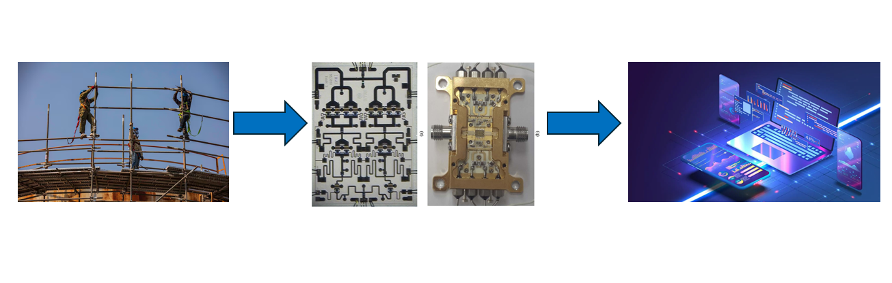
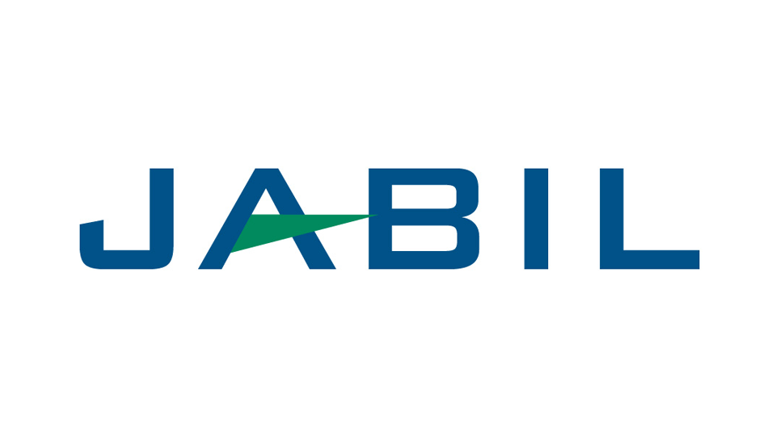

Victor Cly Resume
Summary
A long time Engineering Technician seeking to branch out as a Web Developer. Being a long time Technician being mechanically inclined was a must and coding was left to the engineers. It was time for a change where take my problem solving skills to more software base. This is common in my career, I have gone from working construction to designing high power amplifiers and now Web Development.

Education
- Mesa Community College
- September 2018 - June 2019, No Degree
- ITT Technical Institute
- September 2008 - June 2010: Bachlor's of Science, Electronics and Communications Technology
- September 2006 - June 2008: Associate's of Science, Electronics and Computer Technology
Work Experience


- 

Skills
- Easy to work with
- Good communicator
- mechanically Inclined
- Solder Skilled
- Proficient in Microsoft products ie (Word, excel, powerpoint)
- Computer Literate
- Organized
- Excellent Time Management skills
Awards/Certifications
- My team was awarded Innovator of the year by Tempe, AZ Chamber of Commerce
- Awarded Salutitorian
- NCCER Certified Scaffold Carpenter